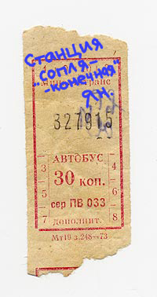

Вова Молодой с полигона.
В первом матче говёного финала Vot tak smrad одержали свою первую победу в кубке и сделали весомую заявку на сохранение доброго имени.
Оба участника говяжего финала дебютанты в играх Кубка Колотиловки. И даже самые продвинутые цыганки на базаре в начале турнира не решались вычёркивать новичков из битвы за хуёвое название. Удача вполне могла оказаться на стороне команды Vot tak smrad — жребий кинул их в группу с третьим дебютантом турнира FC Zivju Fileja. Но поражение с минимальным в очном противостоянии послало вонючек туда, где они сейчас и находятся. И напротив, Amatieri сотворили сенсацию победив маршалов на групповом этапе. Толку от этой победы было мало, но эффект был неслабый.
Из двадцати двух потных мужиков, вышедших на поле в стартовых составах, лишь двое имели латвийское гражданство. Все остальные — буржуйские легионеры, при виде которых у националистической партии тевземей ун бривибай резко вскакивает рейтинг. Тренеры обеих команд решили предельно насытить центр поля. Vot tak smrad решили использовать популярную на Кубке Колотиловки (старуха Шапокляк) расстановку 3-5-2, Amatieri предпочли в гостях более оборонительную 4-5-1.
Напряжение от важности результата сыграло свою роль. С первых же минут матча международные террористы, сепаратисты, серфингисты и дикие ежи, сообща перекусили всевозможные кабеля. В том числе и световые. Благодаря чему начало противостояния было скрыто не только от телезрителей и радиослушателей, но и от трёх сотен учеников школы №87 купивших билет на матч, чтобы слинять от контрольной по немецкому у Валентины Волошиной.
И по стечению обстоятельств, именно в первых минутах матча сложился ход игры. К 26-й минуте хозяева уже забили четыре безответных гола благодаря хеттрику французского вингера Яна Биллета (***) и голу датского нападающего Яна Богебьерга(**). Аматорные в первой половине игры не могли ничего противопоставить столь мощной атаке противника и отметились только лишь театральным падением неприятного и техничного Османа Ювеза из Голландии, получившим за свой артизтизм жёлтую карточку.
Свой первый гол Биллет забил уже на 7-й минуте со штрафного в опасной близости от ворот. А через шесть минут он же (скореее всего), с правого фланга, отдал прекрасную голевую передачу. Звание мастера стандартных положений Биллет закрепил за собой после реализованного пенальти на 21-й минуте игры. И после этого, не желая останавливаться на достигнутом, французский вингер исполняет хеттрик завершив атаку своей команды. Между прочим, этот чувак сейчас продаётся за 260 кусков. Спешите!
Второй тайм вышел грубым и невежественным. Перед ответным поединком любители даже не пытались забить пару голов на выезде, оправдываясь потом перед прессой, как та лошадь, которая «ну не шмогла я, не шмогла!». Вместо этого игроки искали на поле жёлтые карточки и коленки. В этой атмосфере, на 73-й минуте Ян Богебьерг решил поддержать начинание своего тёзки и оформил дубль. Тем самым переделав счёт из разгромного в невьебенно разгромный. Как ни странно, самым хуёвым игроком команды Amatieri был назван вовсе не вратарь. Потому что вратарь — Философов.
А дальше сопля. Всё будет решаться в ответном поединке на стадионе Аматорная. И тут на самом деле хуй знает что будет. Любители уже удивили маршалов в этом сезоне. А значит вполне способны удивить и вонючек. К тому же у них есть реальный шанс подкупить орг-комитет, перенести ответную игру на недельку позже. и выкупив Яна Биллета заставить его оформить такой же хет-трик уже в другие ворота.

Билет на автобус с афтографом Яна Биллета